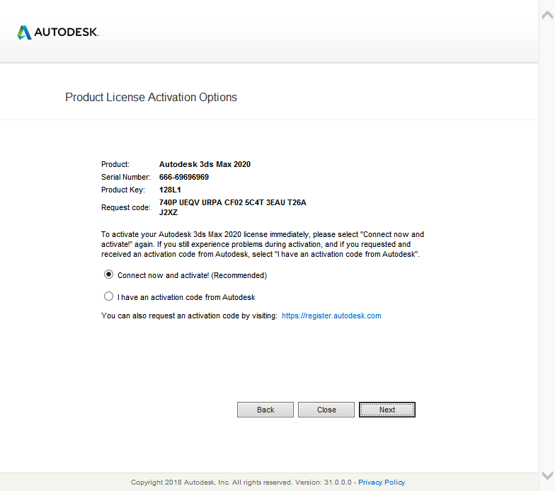
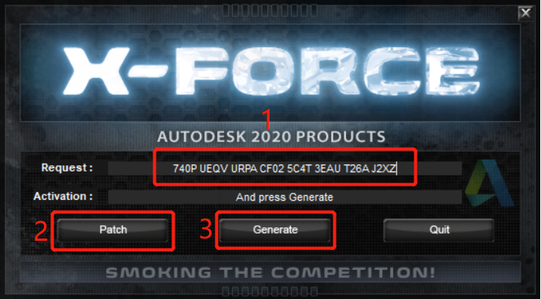
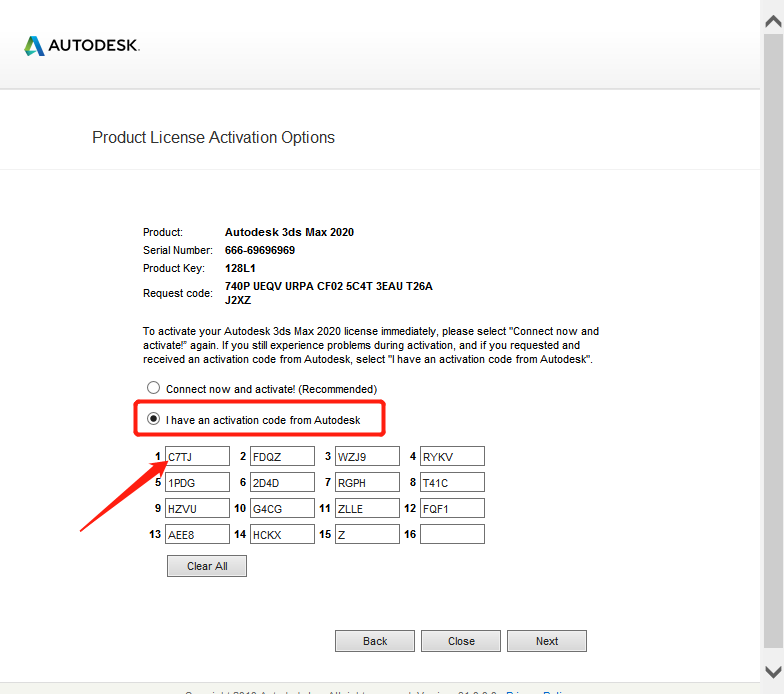
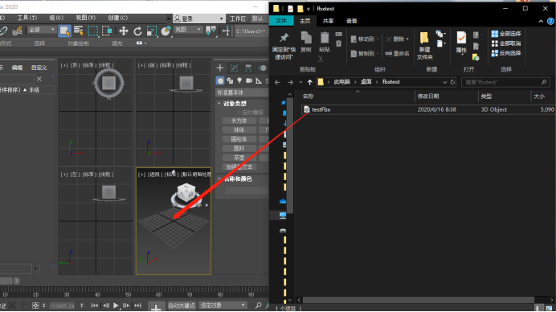
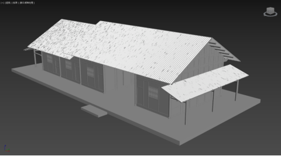

1. 3dsMax概述
3dsMax是由AutoDesk公司开发的三维模型与动画制作渲染软件，它被广泛应用于多个领域，包括游戏设计、广告设计、建筑设计和影视制作等。其优点是具有强大的材质编辑和灯光处理功能，并且相关的学习资源非常丰富。在后期的模型渲染上功能强大，能够得到逼真的模型。同其他建模软件相比，3dsMax创建的模型面片数量较少，占用空间小，模型的处理速度也比较快。本课题正是应用其强大的模型兼容性以及材质编辑功能，作为单体建筑模型后期纹理映射和OBJ模型导出的重要软件。
2. 3dsMax软件安装
3dsMax软件发展至今，从最初的3D Studio MAX 1.0开始，其版本迭代更新二十余次，截至文章发布前，Autodesk公司已推出3dsMax 2021。考虑到兼容性、稳定性等问题，推荐安装3dsMax 2016之后的版本。
本章以3dsMax 2020软件安装为例，详细介绍软件安装的过程及注意事项。
Step1 解压缩安装包
将安装包及注册机文件解压缩至目标文件夹，注意目标文件夹名称及路径应保证全英文。
为防止安装破解过程中出现未知错误，建议安装前关闭所有杀毒软件。
Step2 安装软件
进入安装包文件夹，右键单击Setup.exe，选择以管理员身份运行；
在打开的窗口中选择安装（在此计算机安装）。
许可协议选择我接受，单击下一步。
设置安装路径后，点击安装即可。注意路径仍要保证全英文。
安装完成后，选择立即启动。
Step3 破解软件
第一次进入软件后，选择enter a serial number输入序列号。
选择 I Agree我同意。
进入激活页面，选择Activate激活。
在Serial Number栏中填写序列号666-69696969，单击Next。
第一次会提醒”检测到无效的序列号“，此时选择重新输入，将序列号再次输入即可。
当进入到激活选项窗口，复制Request code请求码。右键单击安装包中的xf-adesk20.exe破解工具，选择以管理员身份运行。

将请求码复制到破解工具中的Request栏后，先单击Patch，再点击Generate，复制Activation栏中自动生成的激活码。

拿到激活码后，回到激活选项页面，选择I have an activation code from Autodesk，把激活码复制到输入框后，点击Next。

激活完成，选择Finish退出激活窗口。
至此，3dsMax 2020安装完成。
3. FBX模型导入
导入FBX模型到3dmax有两种方法供大家参考。
3.1 拖拽导入
直接将模型文件拖至任意视图窗口后，在弹出的选项中选择“导入文件”；

3.2 选项导入
单击菜单栏文件选项，选择导入。
在随后弹出来的导入选项中，注意将“动画”、“摄像机”及“灯光”选项取消勾选。
导入后效果如下图，此时每个构件都没有贴图，修改器属性均为“可编辑网格”。

4. 模型预处理
最后修改于 2021-01-03